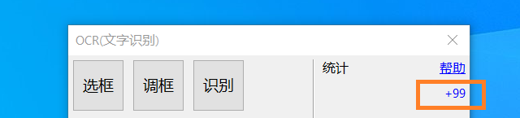

OCR 文字识别
现在 OCR 比较流行, 考虑到用户在使用 RectIcon 时有可能需要文字识别,
为方便用户用软件内置的功能来完成简单的 OCR 工作, RectIcon 采用三方云服务 (Cloud) 的形式来提供 OCR 功能
安全问题
声明, RectIcon 不会搜集用户图片, 但不排除三方云服务收集图片, 非常敏感的信息请不要用本软件 OCR.
用内置的 OCR 有下好处
- 排除技术细节
- 用户不用考虑技术细节, 集成, 对接, 密钥等等, 也不用填写各类账户
- 相对便宜
- 第三方通常以调用次数计费, 会根据不同模式计价, 也会 阶梯计价, RectIcon 集中使用量, 获取较底折扣, 再分发给用户
- RectIcon 在这过程需要评估用量与付费方式, 每年软件安全证书, 域名, 服务器费用 会随着用户用量增加渐渐降低费率
- 按需订阅
- 快速
缺点
在 RectIcon 里 OCR 只是附带功能, 会从 通用 与 便捷 考虑, 提供良好的功能
- 没有专项识别, 比如特定类型的发票, 车票, 身份证
- 不会提供任意的功能, 超多功能, 比如 pdf, word, excel 导出
测试比较
- 微软价格比较低, 但经过测试汉语识别率低, 不可取.
收费
- 收费, 具体在软件里, 如下图所示, 点击 + 查询
如果您比较关心费率, 可以查看 阿里, 腾讯, 百度, 有道, 移动, Microsoft OCR 网页, 自行比较.

特殊情况
RectIcon 不能免费 提供 OCR 功能, RectIcon 本身也要付费给三方.
RectIcon 是全职开发, 业余维护, 如果您有付费的意向, 可以联系 RectIcon 充值.
请不要破译或网络攻击, 遇到特殊情况, 只能暂停 OCR 服务减少损失, 还请手下留情.
QQ 群号
QQ: 1079460418
需要付费使用 OCR 可以进这个群, 作为统计群 (功能未完善前, 付费请联系 QQ 确认)
定制
OCR 是附带功能, 没有盈利只会保留现有功能, 如果您需要特定对接或特定功能也可以联系 RectIcon, 软件定制开发收费会 略 高于市场价, 会比厂商便宜 (Man / Month).